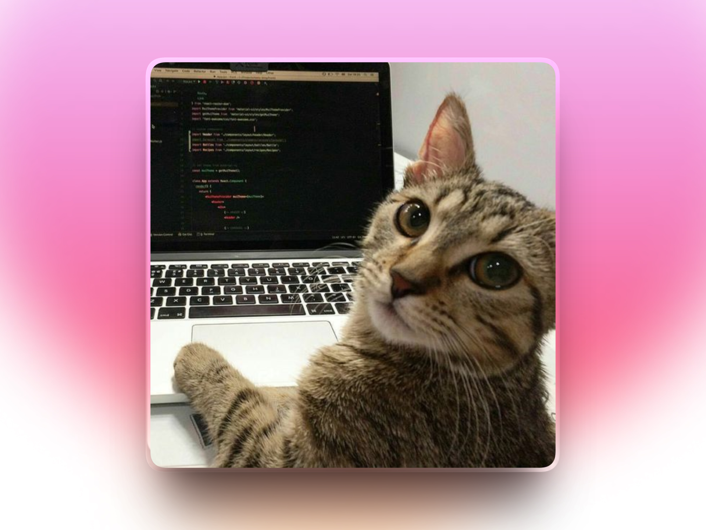
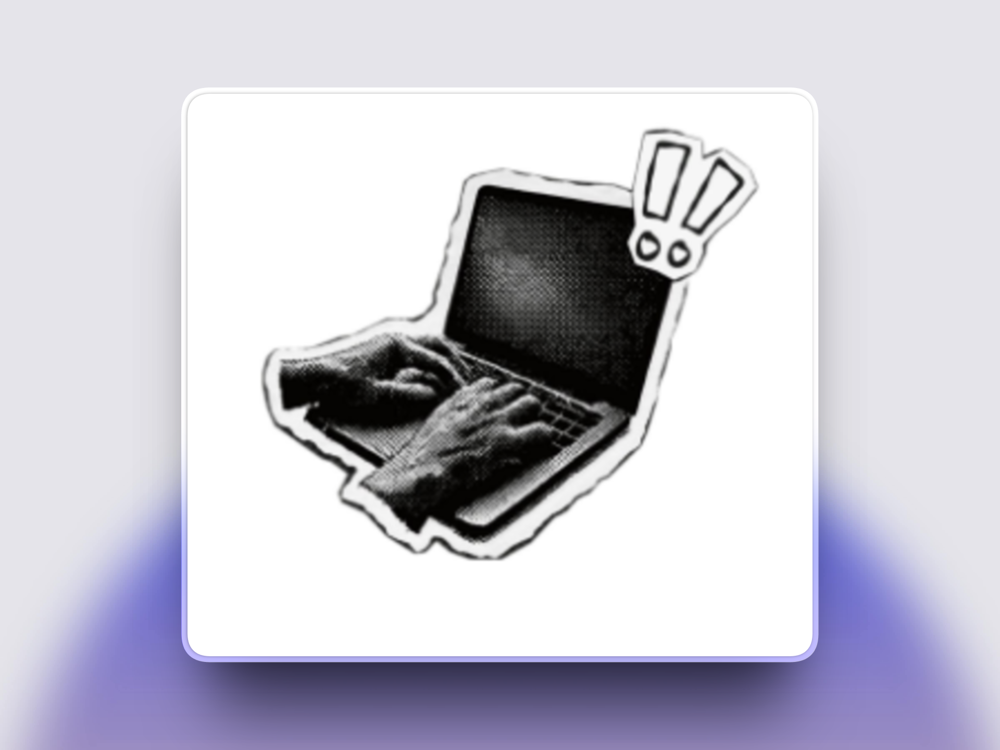
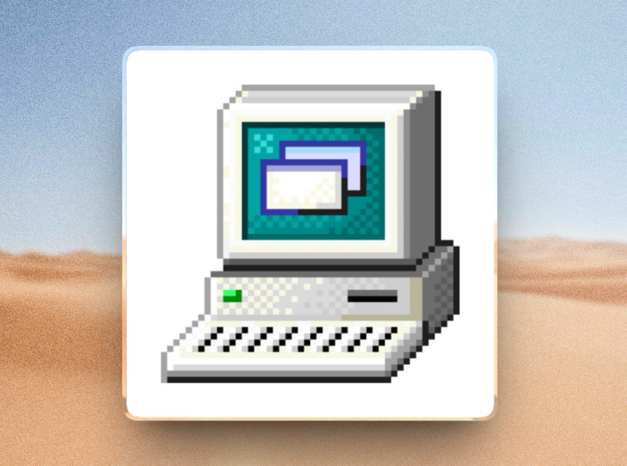

Minimal Utility App
Hit your laptop.
Get an instant weird sound.
Slappy is a tiny app that listens for impact and plays a punchy sound effect, giving your taps a fun audio reaction.
Download for Windows

